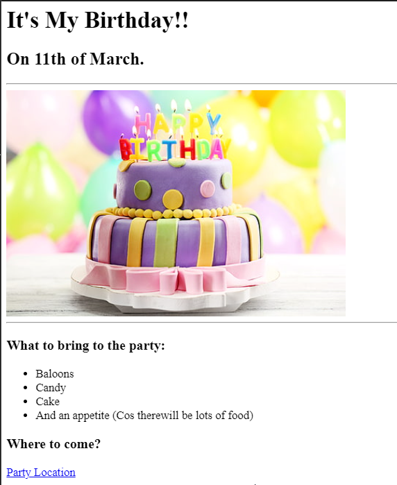
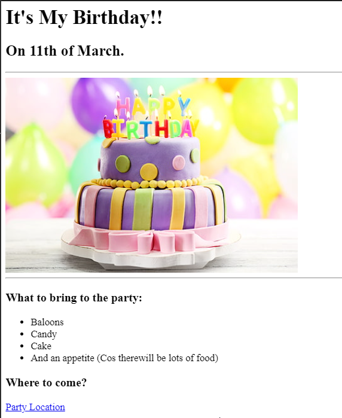
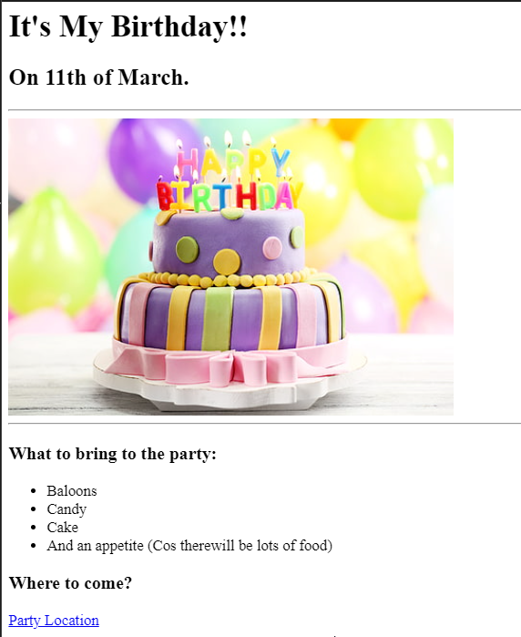

Midhun's Portfolio
I'm Learning Web Development!!
Since last two days i'm learning web development and I have done two projects as listed below
Movie Ranking Project
Birth Day Invite Project

About Me
Contact Me
 
